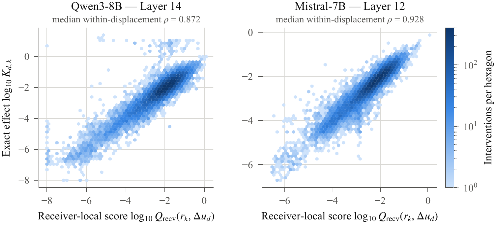
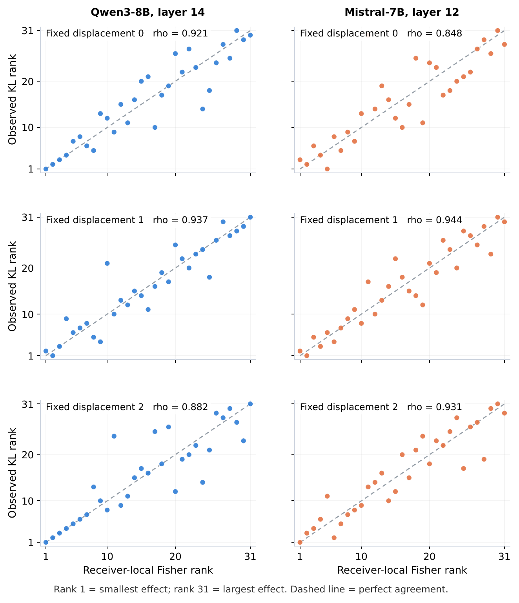
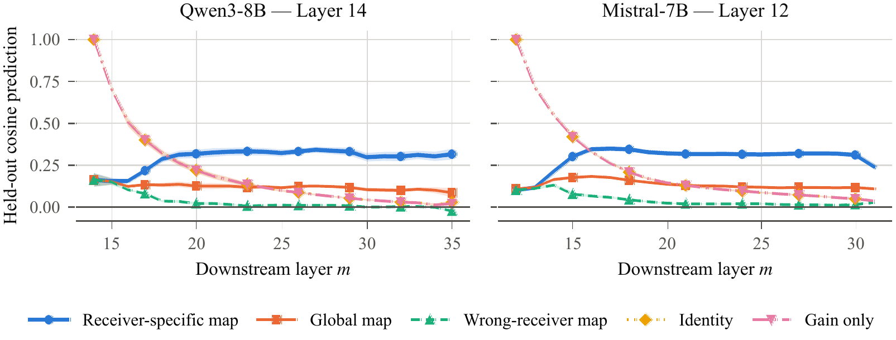

The orange update is held fixed. Only the receiver changes. Use the controls below to see why that matters.
The main receiver ranking survives accurate downstream JVP evaluation.
Starting softmax geometry matters, but does not reproduce the full receiver-local ordering.
The ordering is already visible at much smaller intervention dose.
Generic receiver fragility is substantial, but it does not exhaust the pair-specific signal.
When an internal update is moved between forward passes, is its effect a property of the update alone, or of the update together with the state that receives it?
For host i and donor j, form the natural MLP displacement Δu = uj − ui.
Apply that exact vector, with identical norm and direction, to many natural receiver states.
Measure exact next-token KL and trace how the same causal footprint changes through the downstream network.
Researchers often study and steer language models by reusing internal signals across different inputs. But does the same signal produce the same effect in a different context? We investigate this in Qwen3-8B and Mistral-7B by taking the difference between two naturally occurring MLP outputs and adding the same fixed vector to different receiving contexts. Across 31 alternative receivers, the median ratio between the largest and smallest changes to next-token predictions, measured by KL divergence, exceeds 1,000-fold, even though the vector never changes.
Importantly, this variation is structured: a standard receiver-local Fisher score ranks which contexts are affected most, achieving median within-displacement Spearman correlations of 0.858–0.928 across three disjoint data buckets in each model. An audit using exact FP32 downstream-suffix Jacobian-vector products yields correlations of 0.884 in Qwen and 0.930 in Mistral on a smaller crossed subset. The receiver ranking remains strongly aligned with the full-dose ranking at one-tenth strength, and neither output-distribution geometry nor general receiver sensitivity fully explains the ordering.
Receiver context also changes the direction of the update's downstream hidden-state effect, although receiver-specific low-rank maps recover a modest, reproducible component on held-out updates. Our findings show that an internal update does not have a fixed, portable effect: what it does depends on the context receiving it.
The crossed-receiver design separates the update from its destination.
For a fixed displacement Δud, we run many receivers rk natively and with rk ← rk + Δud. The primary statistic ranks receivers while the physical intervention is held fixed.
The exact endpoint is the forward KL between the native and patched next-token distributions.
We use the standard Fisher pullback through the downstream suffix as a receiver-local sensitivity diagnostic. The geometry itself is not claimed as new; the empirical question is whether it ranks the full-dose effect of the same natural update across different receivers.
We also compare attribution, norm, alignment, matched-magnitude, and physical equal-norm controls.
Receiver dependence is large, ordered, pair-specific, and visible in downstream causal direction.

Across 31 alternative receivers, the largest and smallest exact effects of one displacement differ by a median factor of roughly 104.4–104.8 in Qwen3-8B and 103.3–103.6 in Mistral-7B. Receiver-local Fisher ranking reaches 0.871 / 0.872 / 0.858 in Qwen and 0.911 / 0.928 / 0.928 in Mistral across B1/B2/B3.

| Model | Fisher | AtP-top | AtP-margin | qp2 | ‖Δu‖/‖r‖ | ‖r‖ | |cos(Δu,r)| |
|---|---|---|---|---|---|---|---|
| Qwen3-8B | 0.738 | 0.500 | 0.429 | 0.226 | 0.071 | −0.071 | −0.012 |
| Mistral-7B | 0.905 | 0.750 | 0.179 | 0.060 | 0.000 | 0.000 | 0.048 |
A physical equal-norm transplant control preserves receiver ordering exactly at the median (ρ = 1.000 in both models), showing that displacement scale does not create the ordering.
Receiver identity explains much of the rank variance, but 18–25% remains as non-additive residual variation. After removing additive displacement and receiver effects, Fisher residual correlation remains 0.504–0.520 in Qwen3-8B and 0.658–0.675 in Mistral-7B, above the matched unweighted response in all six crossed replications.

Directional fidelity between the original host footprint and the receiver footprint falls to 0.030 at Qwen3-8B's final layer and 0.037 at Mistral-7B's. Yet receiver-specific rank-16 maps generalize to unseen displacements: at the final layer, held-out cosine reaches 0.316 in Qwen and 0.241 in Mistral, versus 0.086 / 0.109 for one global map and −0.023 / 0.028 for wrong-receiver maps.
The result is deliberately modest: the receiver-dependent transformation contains a reproducible receiver-specific component, while substantial update-specific variation remains.
On 16 frozen B1 displacements × 15 alternative receivers, exact FP32 downstream-suffix Fisher scores retain the full-dose receiver ordering: ρ = 0.884 (Qwen) and 0.930 (Mistral). FP16 and exact-FP32 Fisher rankings agree at 0.977 / 0.988.
The upstream natural states remain from the FP16 pipeline; this is an exact FP32 downstream-suffix audit, not a full-model FP32 run.
A p-only control that freezes the host directional response reaches only 0.600 / 0.618; applying the same host-derived full-dose logit shift to every receiver reaches 0.521 / 0.609. The full receiver-local coupling is substantially stronger.
Output geometry matters, but it does not reproduce the observed receiver ordering by itself.
At 0.1× dose, receiver ordering still matches full dose at 0.900 / 0.938, while KL is only about 1% as large. After receiver effects are estimated on 72 training displacements and removed on 24 held-out ones, residual Fisher–KL association remains 0.379 / 0.489.
Generic receiver fragility is substantial, especially in Mistral, but does not exhaust the pair-specific signal.
These checks sharpen the interpretation rather than change the claim: the Fisher quadratic is established mathematics; the empirical contribution is the crossed intervention and the finding that a fixed natural update acquires a receiver-local effect that is not explained by output geometry, generic receiver fragility, numerical approximation, or large intervention dose alone.
What the result does and does not establish.
The crossed design holds the intervention vector physically fixed while varying the natural receiver context. "Receiver context" includes the branch-specific information available to downstream computation, not only one final-token residual vector. It does not establish that an MLP update is a context-independent semantic function, and the low-rank receiver maps are not complete or deterministic receiver operators.
The study is restricted to final-token MLP interventions and primarily next-token behavior. Full-dose crossed activations can move away from the sampled natural activation neighborhood; the low-dose result reduces but does not eliminate this distribution-shift concern. Teacher-forced continuation is supportive but is not free generation. The paper is diagnostic and proposes no steering or editing method; preserving an intervention's intended causal effect across receivers is a natural direction for future work.
The public reproducibility directory contains the experiment notebooks, verification scripts, lightweight frozen outputs, exact-JVP audit, and final crossed stress-test outputs. The repository is the public source of code and reproducibility material for this paper.
Cite the Muslims in ML workshop version.
@inproceedings{nehan2026transformer_musiml,
title = {Transformer MLP Transplants Depend on the Receiving State},
author = {Nehan, Muhammed},
booktitle = {7th Muslims in ML Workshop at NeurIPS 2026},
year = {2026},
url = {https://openreview.net/forum?id=tEGkJ4J3o7}
}